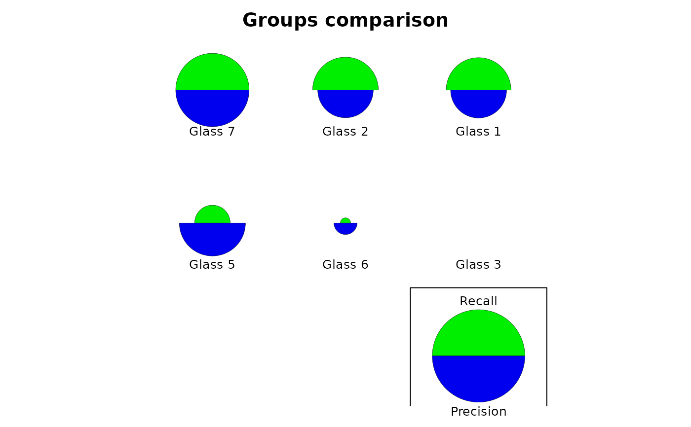
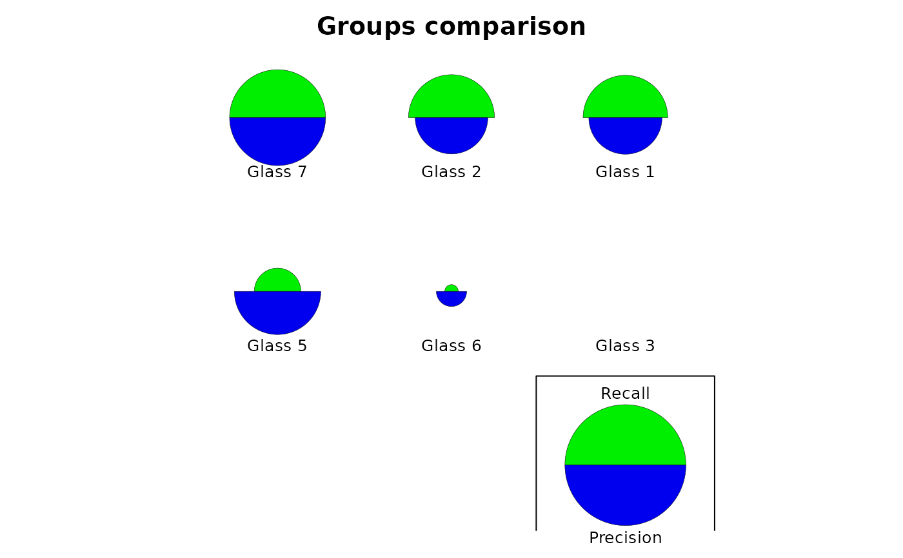

Several graphical representations of confusion objects are possible: an image of the matrix with colored squares, a barplot comparing recall and precision, a stars plot also comparing two metrics, possibly also comparing two different classifiers of the same dataset, or a dendrogram grouping the classes relative to the errors observed in the confusion matrix (classes with more errors are pooled together more rapidly).
Usage
# S3 method for confusion
plot(
x,
y = NULL,
type = c("image", "barplot", "stars", "dendrogram"),
stat1 = "Recall",
stat2 = "Precision",
names,
...
)
confusion_image(
x,
y = NULL,
labels = names(dimnames(x)),
sort = "ward.D2",
numbers = TRUE,
digits = 0,
mar = c(3.1, 10.1, 3.1, 3.1),
cex = 1,
asp = 1,
colfun,
ncols = 41,
col0 = FALSE,
grid.col = "gray",
...
)
confusionImage(
x,
y = NULL,
labels = names(dimnames(x)),
sort = "ward.D2",
numbers = TRUE,
digits = 0,
mar = c(3.1, 10.1, 3.1, 3.1),
cex = 1,
asp = 1,
colfun,
ncols = 41,
col0 = FALSE,
grid.col = "gray",
...
)
confusion_barplot(
x,
y = NULL,
col = c("PeachPuff2", "green3", "lemonChiffon2"),
mar = c(1.1, 8.1, 4.1, 2.1),
cex = 1,
cex.axis = cex,
cex.legend = cex,
main = "F-score (precision versus recall)",
numbers = TRUE,
min.width = 17,
...
)
confusionBarplot(
x,
y = NULL,
col = c("PeachPuff2", "green3", "lemonChiffon2"),
mar = c(1.1, 8.1, 4.1, 2.1),
cex = 1,
cex.axis = cex,
cex.legend = cex,
main = "F-score (precision versus recall)",
numbers = TRUE,
min.width = 17,
...
)
confusion_stars(
x,
y = NULL,
stat1 = "Recall",
stat2 = "Precision",
names,
main,
col = c("green2", "blue2", "green4", "blue4"),
...
)
confusionStars(
x,
y = NULL,
stat1 = "Recall",
stat2 = "Precision",
names,
main,
col = c("green2", "blue2", "green4", "blue4"),
...
)
confusion_dendrogram(
x,
y = NULL,
labels = rownames(x),
sort = "ward.D2",
main = "Groups clustering",
...
)
confusionDendrogram(
x,
y = NULL,
labels = rownames(x),
sort = "ward.D2",
main = "Groups clustering",
...
)Arguments
- x
a confusion object
- y
NULL(not used), or a second confusion object when two different classifications are compared in the plot ("stars"type).- type
the kind of plot to produce (
"image", the default, or"barplot","stars","dendrogram").- stat1
the first metric to plot for the
"stars"type (Recall by default).- stat2
the second metric to plot for the
"stars"type (Precision by default).- names
names of the two classifiers to compare
- ...
further arguments passed to the function. It can be all arguments or the corresponding plot.
- labels
labels to use for the two classifications. By default, they are the same as
vars, or the one in the confusion matrix.- sort
are rows and columns of the confusion matrix sorted so that classes with larger confusion are closer together? Sorting is done using a hierarchical clustering with
hclust(). The clustering method is"ward.D2"by default, but see thehclust()help for other options). IfFALSEorNULL, no sorting is done.- numbers
are actual numbers indicated in the confusion matrix image?
- digits
the number of digits after the decimal point to print in the confusion matrix. The default or zero leads to most compact presentation and is suitable for frequencies, but not for relative frequencies.
- mar
graph margins.
- cex
text magnification factor.
- asp
graph aspect ratio. There is little reasons to change the default value of 1.
- colfun
a function that calculates a series of colors, like e.g.,
cm.colors()that accepts one argument being the number of colors to be generated.- ncols
the number of colors to generate. It should preferably be 2 * number of levels + 1, where levels is the number of frequencies you want to evidence in the plot. Default to 41.
- col0
should null values be colored or not (no, by default)?
- grid.col
color to use for grid lines, or
NULLfor not drawing grid lines.- col
color(s) to use for the plot.
- cex.axis
idem for axes. If
NULL, the axis is not drawn.- cex.legend
idem for legend text. If
NULL, no legend is added.- main
main title of the plot.
- min.width
minimum bar width required to add numbers.
Value
Data calculate to create the plots are returned invisibly. These functions are mostly used for their side-effect of producing a plot.
Examples
data("Glass", package = "mlbench")
# Use a little bit more informative labels for Type
Glass$Type <- as.factor(paste("Glass", Glass$Type))
# Use learning vector quantization to classify the glass types
# (using default parameters)
summary(glass_lvq <- ml_lvq(Type ~ ., data = Glass))
#> Codebook:
#> Class RI Na Mg Al Si K
#> 52 Glass 1 1.517587 13.28383 3.6267597 1.0844480 73.27093 0.58301543
#> 19 Glass 1 1.519656 13.68053 3.9576673 1.0737817 72.09487 0.17855195
#> 66 Glass 1 1.521222 13.16605 4.0158354 0.7779961 72.34701 0.12313837
#> 20 Glass 1 1.519487 12.88883 4.1584855 1.8885698 73.05621 0.30102838
#> 37 Glass 1 1.520243 13.41644 4.2643859 0.7809437 72.32901 0.39032602
#> 51 Glass 1 1.523579 13.60401 4.0741686 0.3161763 72.16985 0.03772843
#> 30 Glass 1 1.517670 12.85907 3.5462287 1.2255746 73.12634 0.60405215
#> 54 Glass 1 1.514249 13.63938 3.1548696 0.7212818 73.17292 0.64804192
#> 138 Glass 2 1.516330 13.16385 3.6306432 1.4898087 72.97339 0.45828713
#> 113 Glass 2 1.528203 11.95054 0.0000000 1.1133036 71.76714 0.19607143
#> 120 Glass 2 1.517513 13.72800 4.6410000 1.0050000 72.97500 -1.03100000
#> 139 Glass 2 1.517274 12.64250 3.8740353 1.5782136 73.58350 0.04156875
#> 73 Glass 2 1.515291 12.77167 3.6692554 1.3495262 73.54321 0.55444923
#> 140 Glass 2 1.516658 12.60834 3.7009893 1.3986225 73.69755 0.47041893
#> 116 Glass 2 1.518434 13.31928 3.9615004 1.2960403 72.42758 0.49444294
#> 93 Glass 2 1.516386 12.54969 3.1536448 1.2577365 73.50275 0.42494827
#> 153 Glass 3 1.517635 13.64600 3.6548947 0.6717895 73.00347 0.05905263
#> 162 Glass 3 1.518047 13.73238 3.5147942 0.4314259 72.80701 0.14350720
#> 170 Glass 5 1.520470 12.01456 0.4963314 1.9306212 73.18111 0.64154891
#> 180 Glass 6 1.517440 14.65930 1.8830694 1.4012584 73.23657 -0.28905578
#> 196 Glass 7 1.515643 14.56206 -0.0139737 2.7440082 73.35501 -0.26906938
#> 214 Glass 7 1.517318 14.58996 0.0000000 2.0104634 73.19444 -0.08271457
#> 193 Glass 7 1.516704 11.91430 0.0000000 1.5229900 76.43517 1.26300551
#> Ca Ba Fe
#> 52 8.179518 -0.077010818 -0.025241541
#> 19 8.843803 0.031945915 -0.063182372
#> 66 9.481523 0.000000000 0.097254536
#> 20 8.589478 -0.072000000 -0.105676559
#> 37 8.953499 -0.290485140 -0.369404755
#> 51 9.617862 0.000000000 0.089839135
#> 30 8.577116 -0.002428826 0.070600884
#> 54 8.480408 -0.239912400 -0.191929920
#> 138 8.075058 -0.046942383 0.013797065
#> 113 14.342679 0.421875000 0.103928571
#> 120 8.269000 0.000000000 0.000000000
#> 139 8.120423 0.000000000 -0.069097045
#> 73 8.271785 -0.376153846 -0.062030769
#> 140 8.434071 -0.507692308 -0.047715976
#> 116 8.341131 -0.129201738 0.131334290
#> 93 8.786087 0.033744980 0.168361057
#> 153 8.896684 0.000000000 0.000000000
#> 162 8.822687 0.282739200 0.452382720
#> 170 11.610939 0.000000000 0.021658224
#> 180 9.283795 -0.188536313 -0.071493388
#> 196 8.791390 0.797433301 0.019055122
#> 214 8.435528 1.795602212 0.006466783
#> 193 8.745619 0.212625653 0.047840772
# Calculate cross-validated confusion matrix and plot it in different ways
(glass_conf <- confusion(cvpredict(glass_lvq), Glass$Type))
#> 214 items classified with 143 true positives (error rate = 33.2%)
#> Predicted
#> Actual 01 02 03 04 05 06 (sum) (FNR%)
#> 01 Glass 3 0 11 6 0 0 0 17 100
#> 02 Glass 1 1 55 14 0 0 0 70 21
#> 03 Glass 2 0 13 59 3 1 0 76 22
#> 04 Glass 5 0 0 6 6 0 1 13 54
#> 05 Glass 6 1 2 1 1 1 3 9 89
#> 06 Glass 7 0 2 3 1 1 22 29 24
#> (sum) 2 83 89 11 3 26 214 33
# Raw confusion matrix: no sort and no margins
print(glass_conf, sums = FALSE, sort = FALSE)
#> 214 items classified with 143 true positives (error rate = 33.2%)
#> Predicted
#> Actual 01 02 03 04 05 06
#> 01 Glass 1 55 14 1 0 0 0
#> 02 Glass 2 13 59 0 3 1 0
#> 03 Glass 3 11 6 0 0 0 0
#> 04 Glass 5 0 6 0 6 0 1
#> 05 Glass 6 2 1 1 1 1 3
#> 06 Glass 7 2 3 0 1 1 22
# Plots
plot(glass_conf) # Image by default
 plot(glass_conf, sort = FALSE) # No sorting
plot(glass_conf, sort = FALSE) # No sorting
 plot(glass_conf, type = "barplot")
#> Warning: argument 1 does not name a graphical parameter
plot(glass_conf, type = "stars")

plot(glass_conf, type = "dendrogram")
plot(glass_conf, type = "barplot")
#> Warning: argument 1 does not name a graphical parameter
plot(glass_conf, type = "stars")

plot(glass_conf, type = "dendrogram")
 # Build another classifier and make a comparison
summary(glass_naive_bayes <- ml_naive_bayes(Type ~ ., data = Glass))
#> A mlearning object of class mlNaiveBayes (naive Bayes classifier):
#> Initial call: mlNaiveBayes.formula(formula = Type ~ ., data = Glass)
#>
#> Naive Bayes Classifier for Discrete Predictors
#>
#> Call:
#> naiveBayes.default(x = train, y = response, laplace = laplace,
#> .args. = ..1)
#>
#> A-priori probabilities:
#> response
#> Glass 1 Glass 2 Glass 3 Glass 5 Glass 6 Glass 7
#> 0.32710280 0.35514019 0.07943925 0.06074766 0.04205607 0.13551402
#>
#> Conditional probabilities:
#> RI
#> response [,1] [,2]
#> Glass 1 1.518718 0.002268097
#> Glass 2 1.518619 0.003802126
#> Glass 3 1.517964 0.001916360
#> Glass 5 1.518928 0.003345355
#> Glass 6 1.517456 0.003115783
#> Glass 7 1.517116 0.002545069
#>
#> Na
#> response [,1] [,2]
#> Glass 1 13.24229 0.4993015
#> Glass 2 13.11171 0.6641594
#> Glass 3 13.43706 0.5068871
#> Glass 5 12.82769 0.7770366
#> Glass 6 14.64667 1.0840203
#> Glass 7 14.44207 0.6863588
#>
#> Mg
#> response [,1] [,2]
#> Glass 1 3.5524286 0.2470430
#> Glass 2 3.0021053 1.2156615
#> Glass 3 3.5435294 0.1627859
#> Glass 5 0.7738462 0.9991458
#> Glass 6 1.3055556 1.0971339
#> Glass 7 0.5382759 1.1176828
#>
#> Al
#> response [,1] [,2]
#> Glass 1 1.163857 0.2731581
#> Glass 2 1.408158 0.3183403
#> Glass 3 1.201176 0.3474889
#> Glass 5 2.033846 0.6939205
#> Glass 6 1.366667 0.5718610
#> Glass 7 2.122759 0.4427261
#>
#> Si
#> response [,1] [,2]
#> Glass 1 72.61914 0.5694842
#> Glass 2 72.59803 0.7245726
#> Glass 3 72.40471 0.5122758
#> Glass 5 72.36615 1.2823191
#> Glass 6 73.20667 1.0794675
#> Glass 7 72.96586 0.9402337
#>
#> K
#> response [,1] [,2]
#> Glass 1 0.4474286 0.2148790
#> Glass 2 0.5210526 0.2137262
#> Glass 3 0.4064706 0.2298897
#> Glass 5 1.4700000 2.1386951
#> Glass 6 0.0000000 0.0000000
#> Glass 7 0.3251724 0.6684931
#>
#> Ca
#> response [,1] [,2]
#> Glass 1 8.797286 0.5748066
#> Glass 2 9.073684 1.9216353
#> Glass 3 8.782941 0.3801112
#> Glass 5 10.123846 2.1837908
#> Glass 6 9.356667 1.4499483
#> Glass 7 8.491379 0.9735052
#>
#> Ba
#> response [,1] [,2]
#> Glass 1 0.012714286 0.08383769
#> Glass 2 0.050263158 0.36234044
#> Glass 3 0.008823529 0.03638034
#> Glass 5 0.187692308 0.60825096
#> Glass 6 0.000000000 0.00000000
#> Glass 7 1.040000000 0.66534094
#>
#> Fe
#> response [,1] [,2]
#> Glass 1 0.05700000 0.08907496
#> Glass 2 0.07973684 0.10643275
#> Glass 3 0.05705882 0.10786361
#> Glass 5 0.06076923 0.15558821
#> Glass 6 0.00000000 0.00000000
#> Glass 7 0.01344828 0.02979404
#>
(glass_conf2 <- confusion(cvpredict(glass_naive_bayes), Glass$Type))
#> 214 items classified with 88 true positives (error rate = 58.9%)
#> Predicted
#> Actual 01 02 03 04 05 06 (sum) (FNR%)
#> 01 Glass 3 3 13 0 0 1 0 17 82
#> 02 Glass 1 15 49 5 0 1 0 70 30
#> 03 Glass 2 13 40 12 5 6 0 76 84
#> 04 Glass 5 0 0 3 0 9 1 13 100
#> 05 Glass 6 0 0 0 0 8 1 9 11
#> 06 Glass 7 0 1 0 2 10 16 29 45
#> (sum) 31 103 20 7 35 18 214 59
# Comparison plot for two classifiers
plot(glass_conf, glass_conf2)
# Build another classifier and make a comparison
summary(glass_naive_bayes <- ml_naive_bayes(Type ~ ., data = Glass))
#> A mlearning object of class mlNaiveBayes (naive Bayes classifier):
#> Initial call: mlNaiveBayes.formula(formula = Type ~ ., data = Glass)
#>
#> Naive Bayes Classifier for Discrete Predictors
#>
#> Call:
#> naiveBayes.default(x = train, y = response, laplace = laplace,
#> .args. = ..1)
#>
#> A-priori probabilities:
#> response
#> Glass 1 Glass 2 Glass 3 Glass 5 Glass 6 Glass 7
#> 0.32710280 0.35514019 0.07943925 0.06074766 0.04205607 0.13551402
#>
#> Conditional probabilities:
#> RI
#> response [,1] [,2]
#> Glass 1 1.518718 0.002268097
#> Glass 2 1.518619 0.003802126
#> Glass 3 1.517964 0.001916360
#> Glass 5 1.518928 0.003345355
#> Glass 6 1.517456 0.003115783
#> Glass 7 1.517116 0.002545069
#>
#> Na
#> response [,1] [,2]
#> Glass 1 13.24229 0.4993015
#> Glass 2 13.11171 0.6641594
#> Glass 3 13.43706 0.5068871
#> Glass 5 12.82769 0.7770366
#> Glass 6 14.64667 1.0840203
#> Glass 7 14.44207 0.6863588
#>
#> Mg
#> response [,1] [,2]
#> Glass 1 3.5524286 0.2470430
#> Glass 2 3.0021053 1.2156615
#> Glass 3 3.5435294 0.1627859
#> Glass 5 0.7738462 0.9991458
#> Glass 6 1.3055556 1.0971339
#> Glass 7 0.5382759 1.1176828
#>
#> Al
#> response [,1] [,2]
#> Glass 1 1.163857 0.2731581
#> Glass 2 1.408158 0.3183403
#> Glass 3 1.201176 0.3474889
#> Glass 5 2.033846 0.6939205
#> Glass 6 1.366667 0.5718610
#> Glass 7 2.122759 0.4427261
#>
#> Si
#> response [,1] [,2]
#> Glass 1 72.61914 0.5694842
#> Glass 2 72.59803 0.7245726
#> Glass 3 72.40471 0.5122758
#> Glass 5 72.36615 1.2823191
#> Glass 6 73.20667 1.0794675
#> Glass 7 72.96586 0.9402337
#>
#> K
#> response [,1] [,2]
#> Glass 1 0.4474286 0.2148790
#> Glass 2 0.5210526 0.2137262
#> Glass 3 0.4064706 0.2298897
#> Glass 5 1.4700000 2.1386951
#> Glass 6 0.0000000 0.0000000
#> Glass 7 0.3251724 0.6684931
#>
#> Ca
#> response [,1] [,2]
#> Glass 1 8.797286 0.5748066
#> Glass 2 9.073684 1.9216353
#> Glass 3 8.782941 0.3801112
#> Glass 5 10.123846 2.1837908
#> Glass 6 9.356667 1.4499483
#> Glass 7 8.491379 0.9735052
#>
#> Ba
#> response [,1] [,2]
#> Glass 1 0.012714286 0.08383769
#> Glass 2 0.050263158 0.36234044
#> Glass 3 0.008823529 0.03638034
#> Glass 5 0.187692308 0.60825096
#> Glass 6 0.000000000 0.00000000
#> Glass 7 1.040000000 0.66534094
#>
#> Fe
#> response [,1] [,2]
#> Glass 1 0.05700000 0.08907496
#> Glass 2 0.07973684 0.10643275
#> Glass 3 0.05705882 0.10786361
#> Glass 5 0.06076923 0.15558821
#> Glass 6 0.00000000 0.00000000
#> Glass 7 0.01344828 0.02979404
#>
(glass_conf2 <- confusion(cvpredict(glass_naive_bayes), Glass$Type))
#> 214 items classified with 88 true positives (error rate = 58.9%)
#> Predicted
#> Actual 01 02 03 04 05 06 (sum) (FNR%)
#> 01 Glass 3 3 13 0 0 1 0 17 82
#> 02 Glass 1 15 49 5 0 1 0 70 30
#> 03 Glass 2 13 40 12 5 6 0 76 84
#> 04 Glass 5 0 0 3 0 9 1 13 100
#> 05 Glass 6 0 0 0 0 8 1 9 11
#> 06 Glass 7 0 1 0 2 10 16 29 45
#> (sum) 31 103 20 7 35 18 214 59
# Comparison plot for two classifiers
plot(glass_conf, glass_conf2)